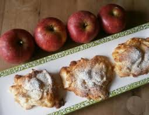

Apfelküchlein

Beschreibung
Ein Klassiker, der Kindheitserinnerungen weckt: Die Zubereitung ist mit diesem Rezept auf jeden fall keine Hexerei. Servieren Sie die Küchlein doch einmal zur Abwechslung mit Vanilleeis.
Das Rezept erfordert übliche Zutaten, welche in jedem Haushalt zu finden sind. Wage dich an das Rezept ran und verzaubere deine Liebsten mit deinen frühlingshaften Apfelküchlein.
Zutaten
- 500 ml Milch
- 1 Ei
- 40 gr Zucker
- 60 gr Mehl
- 1 Prise Salz
- 1 Pck Vanillinzucker
- 2 Äpfel ( ca. 300 gr)
- Zimt nach Bedarf
Zubereitung
- Alle Zutaten bis auf die Äpfel zu einem glatten Teig verrühren.
- Äpfel schälen und zu kleinen Würfeln schneiden.
- Anschließend die gewürfelten Äpfel mit dem glatten Teig vermengen.
- Den Teig mit einer Schöpfkelle in kleinen Portionen in eine ölbeschichtete Pfanne geben.
- DIe Küchlein auf beiden Seiten goldbraun backen und vor dem Servieren abkühlen lassen.
Back to home